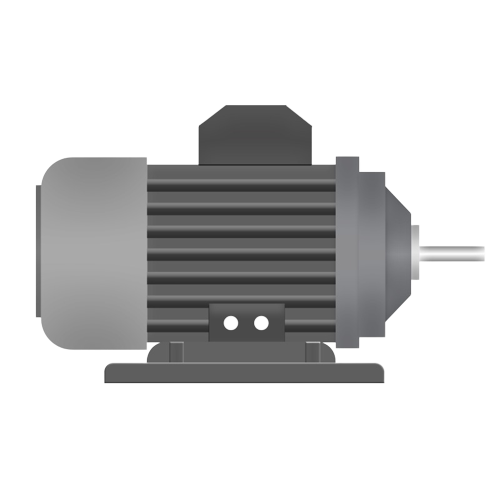
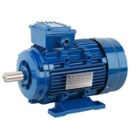
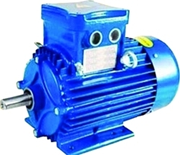
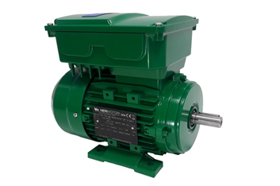

Instructions
Step 1:
The aim of this experiment is to get familiarized with the electrical devices.
Step 2:
Click on ‘Next’ Button to view the next electrical device.
Step 3:
Click on ‘Previous’ button to go back to previous electrical device.
Step 4:
Repeat Step 2 and 3 until you reach the end of the experiment.
Instructions
TO GET FAMILIARIZED WITH THE ELECTRICAL DEVICES.
 Figure 1: Electric motor
Electric motor, any of a class of devices that convert electrical energy to mechanical energy, usually by employing electromagnetic phenomena.
Most electric motors develop their mechanical torque by the interaction of conductors carrying in a direction at right angles to a magnetic field. They operate using principle of electromagnetism, which shows that a force is applied when an electric current is present in a magnetic field. This force creates a torque on a loop of wire present in the magnetic field, which causes the motor to spin and perform useful work. Motors are used in a wide range of applications such as fans, power tools, appliances, electric vehicles and hybrid cars. Motors can run both on DC or AC supply.
There are many type of motors.
-
Induction motors
-
DC motors
-
Synchronous motor
-
Universal motor
Induction motors and synchronous motors are known as AC motors. These motors driven by an alternating current.
In DC motors many types of motors came.
-
Permanent magnet DC motors
-
Series DC motors
-
Shunt DC motors
-
Compound DC motors
All the above motors are used at different places.
Now a days induction motors are widely used.
Series DC motors can run on DC supply.
-
Induction motor:
An induction motor is a generally used AC electric motor. In an induction motor, the electric current in the rotor needed to produce torque is obtained via electromagnetic induction from the rotating magnetic field of the stator winding. The rotor of an induction motor can be a squirrel cage rotor or wound type rotor.
Used in different applications, induction motors are also called Asynchronous Motors. This is because an induction motor always runs at a slower speed than synchronous speed. The speed of the rotating magnetic field in the stator is called synchronous speed.
Induction machines are the most frequently-used type of motor used in residential, commercial, and industrial settings so far.

Figure 2: Induction motor
-
DC motors:
A DC motor is an electric motor that runs on direct current power. In an electric motor, the operation is dependent upon simple electromagnetism. A current-carrying conductor generates a magnetic field, when this is then placed in an external magnetic field, it will encounter a force proportional to the current in the conductor and to the strength of the external magnetic field. It is a device that converts electrical energy to mechanical energy.
It works on the fact that a current-carrying conductor placed in a magnetic field experiences a force that causes it to rotate with respect to its original position. Practical DC Motor consists of field windings to provide the magnetic flux and armature which acts as the conductor.

Figure 3: DC motor
-
Synchronous motor:
A synchronous motor is an AC motor in which the rotation of the shaft is the same pace as the frequency of the applied current. In other words, the way a synchronous motor works is the same as an AC motor does but with the difference that the total number of rotations made by the shaft in synchronous kind is equal to the integer multiple of the frequency of the applied current.
The synchronous motor doesn’t depend on induction current for its working. In this kind of motor, and unlike the induction motors, there are multiphase AC electromagnets on the stator that produce a rotating magnetic field. In synchronous, the rotor consists of a permanent magnet that is synced with the rotating magnetic field and rotates in synchronous to the frequency of current applied to it.

Figure 4: Synchronous motor
-
Universal motor:
A universal motor is a special type of motor which is designed to run on either DC or single phase AC supply. These motors are generally series wound (armature and field winding are in series), and hence produce high starting torque (See characteristics of DC motors here). That is why, universal motors generally comes built into the device they are meant to drive. Most of the universal motors are designed to operate at higher speeds, exceeding 3500 RPM. They run at lower speed on AC supply than they run on DC supply of same voltage, due to the reactance voltage drop which is present in AC and not in DC.

Figure 5: Universal Motor